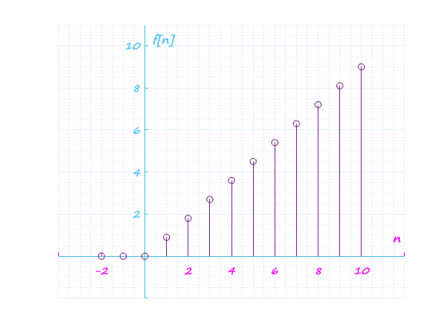
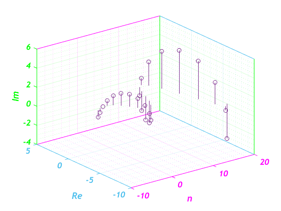
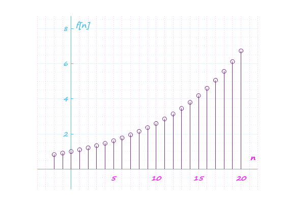
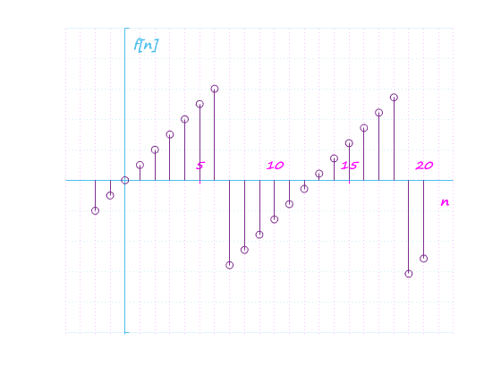
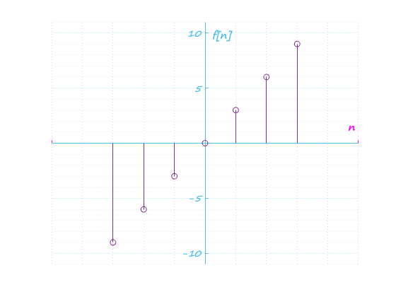
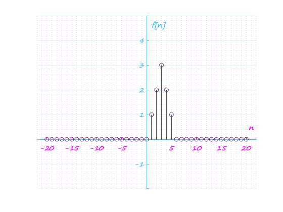
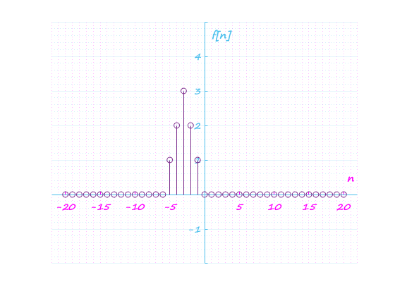
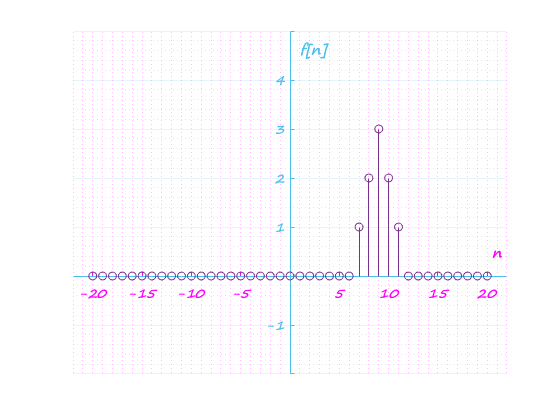
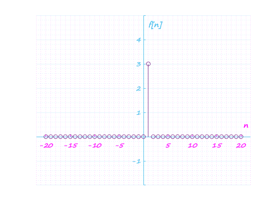
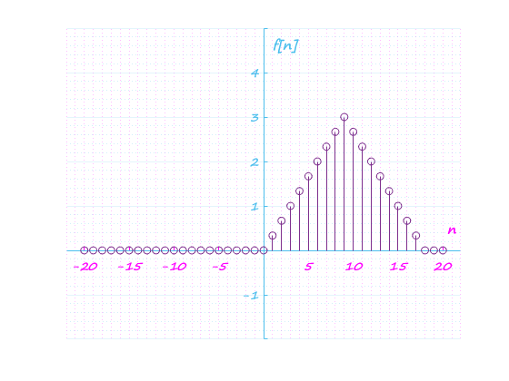

Prcatica 3 : Señales en tiempo discreto
Contents
Problema 1:
function f = fun1(r, W, n)
f=(r.^n).*cos(W.*n)+(r.^n).*sin(W.*n).*1i;
end
Problema 2:
n=-2:10;
a=0.9;
x=@(n) n.*a.*heaviside(n);
GraficaD(n, x(n))

Problema 3:
n=-2:20;
f=fun1(1.1, 0.5, n);
GraficaD3(n, real(f), imag(f))
GraficaD(n, abs(f))
GraficaD(n, angle(f))
  
Problema 4:
function E = EnergiaDis(t, h)
Ec = h.^2;
E = sum(Ec);
GraficaD(t, h)
end
Problema 5:
n=-3:3;
h=[-9 -6 -3 0 3 6 9];
E = EnergiaDis(n, h)
E =
252

Problema 6:
n=-20:20;
x=@(n) n.*(n>=0 & n<=3) + (6-n).*(n>3 & n<=6);
GraficaD(n, x(n))
GraficaD(n, x(-n))
GraficaD(n, x(n+6))
GraficaD(n, x(n-6))
GraficaD(n, x(3*n))
GraficaD(n, x(n/3))
    